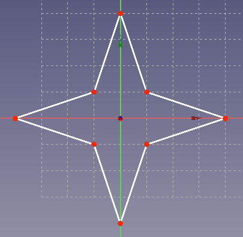
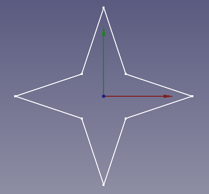
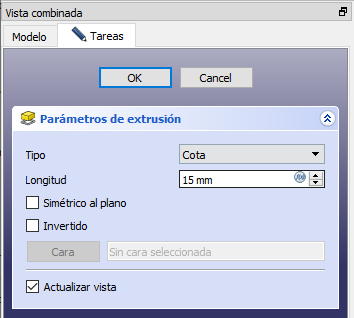
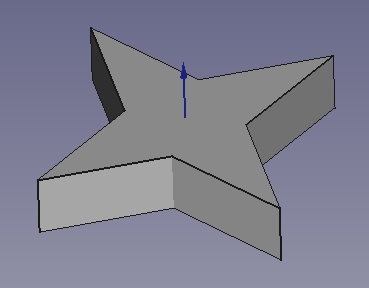
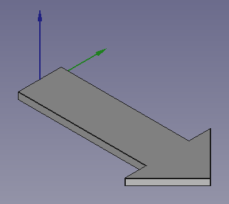
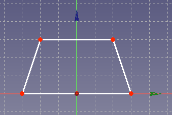
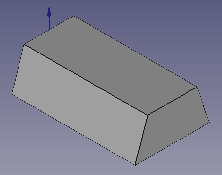
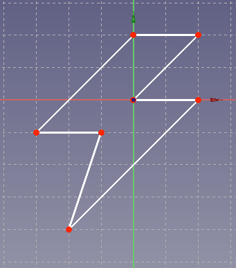
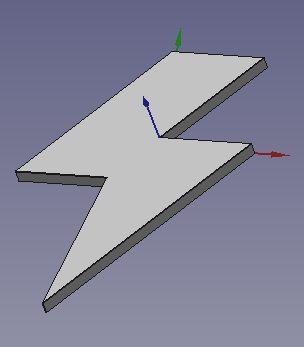

13. Extrusió de croquis¶
Fins ara hem treballat amb el banc de treball ** Part ** que serveix per crear objectes directament en tres dimensions. Aquests objectes es poden unir, restar o intersecció. Aquest paradigma s’anomena geometria constructiva.
A partir d’ara utilitzarem un mètode diferent. Primer crearem objectes en dues dimensions (esbós) amb el banc de treball ** Disseny de part ** ** i després extreure aquest dibuix per crear l'objecte final en tres dimensions.
; BR |
Obrim l’aplicació ** Freecad ** i fem clic a la icona per crear un document ** nou ** | Icon-new-Document |.
Seleccionem el disseny de la part del banc de treball ** **

A continuació, seleccionem per crear un esbós nou.

I vam triar el pla XY com a pla base per col·locar el nou esbós.

A la pantalla apareixerà una graella per dibuixar dues dimensions.

; BR |
Després dibuixarem un objecte senzill, una estrella.
Primer ajustem els controls d’edició a la pestanya Task, de manera que el dibuix s’ajusti a la xarxa.

Ara crearem una estrella amb la icona de Polyline | Polilinea |.

Feu clic als punts, els podem arrossegar amb el ratolí per perfeccionar millor les dimensions del nostre dibuix.
Un cop acabats, feu clic a les tasques ** ** i premeu el botó `` tanca ''. El nostre dibuix es veurà a la vista de plantes com a la figura següent.

; BR |
Per obtenir una peça de tres dimensions, extreuem el nostre esbós seleccionant la icona corresponent.

O seleccionant al disseny de part ...
En els paràmetres d'extrusió, hem escollit el nivell o l'alçada que volem per a la peça, en aquest cas 15 mil·límetres.

Si canviem en perspectiva, podem veure la nostra estrella en tres dimensions.

; BR |
Si ara volem ** editar l'objecte **, només haurem de fer doble clic a l'esbós de manera que el dibuix aparegui a la pantalla, amb tots els punts que hem posat al principi.
Aquest esbós es pot editar arrossegant els punts a un lloc nou i l'estrella en tres dimensions canviarà.
Si volem moure l'estrella o girar -la, haurem de fer aquesta operació a l'esbós o al croquis.
Per canviar l'alçada ** de l'estrella **, haurem de fer doble clic a l'objecte ** PAD ** i el diàleg dels paràmetres d'extrusió tornarà a obrir -se, amb la dimensió corresponent.
; BR |
Exercicis¶
Creeu una peça en forma de fletxa 3D.

; BR |
Creeu un lingot des d’un trapezi.
El trapezi es dibuixarà amb un esbós a l’eix YZ.

I després s’extreu a l’eix x.

; BR |
Creeu el símbol de raigs de tres dimensions.
L’esbós es dibuixarà com a figura següent.

Després d'extudiar la figura, semblarà la imatge següent.

; BR |
Videotuitorial¶
Vídeo: Sketch Hello World.